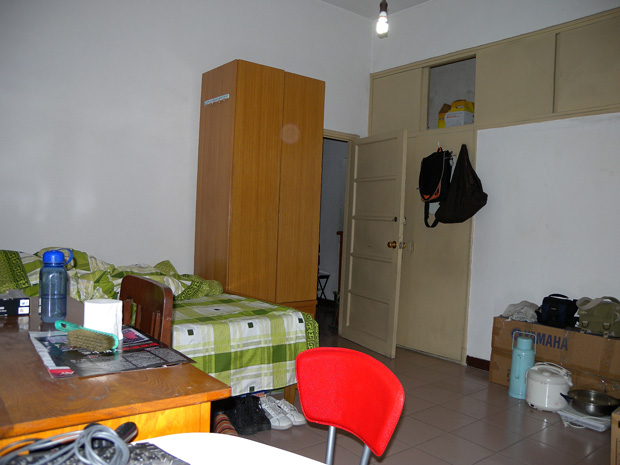
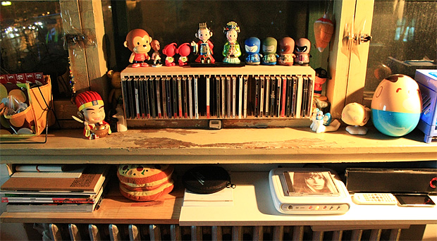
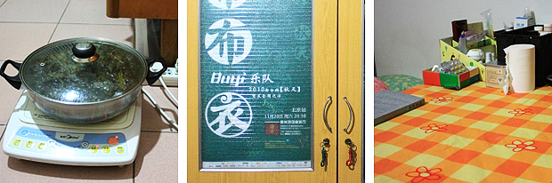
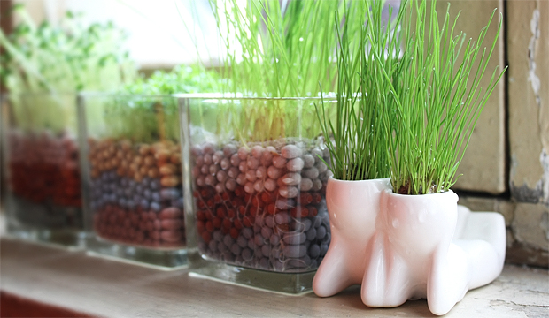

一
漂在北京的十年里，住过不少地方，城东城南城西城北都或短或长的待过。换房子不好的地方就是越换越麻烦，东西越来越多。好的地方就是能给生活提供新鲜感，探索每个地方周边有趣的地方是一个能持续很长时间的消遣。我们上一个住的地方是亲戚的一套2居，那是我们住的最宽敞舒适的一个房子。当时还接待了远方来的朋友粟虹，她可以睡在其中一个房间。后来她得知我们现在跟别人合租，不由得发出感叹：“你们怎么越住越差了？”，哈。 现在我们和另外一家合租一个2居，虽然生活上有些许不便，但大体上还是挺好的。只是像我们也老大不小的年纪，在北京的这个居住状况，也不大跟家人说太多，怕他们未免觉得心酸。然而不知不觉，这里已成为我们住得最久的一个房子了。在这段过程中，还是发现这个地方不少的优点。当我们挺坦然地对待这个状况，我想作为父母朋友也不需要太担心。开心最重要，我们在这里住得挺愉快，今天就大肆总结一下，毕竟那么久了还没为这个窝写点什么。 先说说这个房子的大概情况，首先房东是我一个北京师弟，所以价钱上给我们算便宜了。这是好处之一，在住房上少花点钱，能让我们更舍得在自己别的兴趣爱好上花费。我们和另外一家人合租，他们住的是大间，我们是小间。但还行，这个小间有18平，我们所有的活动基本都在里面。刚进来的时候是下面这个样子，家具都是原有的，有点老式。

二
在这房子住了一段时间后，觉得空间利用上还是不够合理。于是我们决定开始重新布置空间，当中改变的细节很难描述清楚，那份欣喜和愉悦自己牢记就好。其中最大胆的就是把原来一个梳妆柜拆成了两半，塞到壁柜里面去了，尺寸大小刚刚合适，实在太运气了，一下客厅就宽敞起来。而且梳妆柜在壁柜里面，也把许多之前用不到的空间丰富起来，很多不常用的东西都塞到壁柜里面去了。

这是最后弄完的效果。平日基本的娱乐都在这两个工作桌上完成，这两宜家的桌子比较大，也很结实，电脑，录音设备等全都能摆得下。其实它们的真实身份是餐桌，但我们觉得比别的办公桌都合适，最后就选了这款。屋里没有电视，还好现在网络发达，在线看节目都很方便，不会耽误什么。两个工作桌底下放了两个地毯，是在对面的天丰利市场买的便宜处理货，放上去后再搁几个整理箱，又增添了不少储物空间，底下藏着书，杂物，和平日的零食。这样改变了以后，桌子前面那块比以前省出不少空间，我们在这玩个跳舞毯，做点简单的运动都没问题。

上面是窗台，在暖气片上架两块木板，又可以放很多东西。右边是床，想着有时候会躺在床上看会书，所以这边把以前办信用卡送的DVD机拿出来，配上一个小音箱，配上暖黄色的台灯，马上感觉就不一样了。除了平时边看书边听音乐，周末早上赖床的话还能用音乐把自己唤醒。别的地方放些最近看的书,CD,和玩偶，仔细看的话会发现窗户还贴着透明胶。那是因为原来是两层窗户，很暖和，但是前年夏天发生了“被吹落的窗玻璃”后，就剩下一层玻璃了，冬天寒风搜搜地往里窜，我们只能用透明胶把窗户缝全堵上。

左：床脚有个小空地，布了线，能在这用电磁炉煮点东西。 中：布衣乐队亲笔签名的海报，拿回来装饰在老衣柜上，“布衣”，还挺切合主题。 右：老的旧书桌被放到床脚，可以放不少杂物，也能稍微档一下床。 这个房间还有一个值得一提的大好处就是有两个很大的壁柜，藏在墙里面，就不上图了。我们的许多杂物箱都能堆在里面，让眼睛看得到的地方还能保持相对的简洁。目前这个空间我们还挺满意，但也许以后看腻了，或有更好地点子，也不排除继续折腾的可能。我们都开始喜欢上了这项娱乐：）这老房子虽然也有不少问题，但总体说来住的还是挺高兴的，我想最重要的是心态。
三
在北京，能走路上下班绝对是件奢侈的事。回想住万寿路那会，每天6点过起床为了坐7点在五棵松的班车，然后绕半个四环去酒仙桥上班。每天往返各花1个多小时，在北京挺正常的事儿。那时候下班每天车到海淀桥必堵，然后住中关村附近的同事就纷纷先下了，留下我们为数不多的几个继续在车上憋屈着，有时候睡了一觉都醒了，还没到家。当年有个同事家住燕郊，每天开车上下班，早上5点起，5点半出门才能8点15赶到公司，后来他去了厦门。有过这样的经历，我对现在每天能走路下班，真的很满足。 交通：我们住的地方交通确实算是罕见的方便。旁边就是地铁5号线和平西桥站，转10号线只有1站，2号线只有2站；又在三环边上，是300快公交车的起点站，三环沿线也算方便。东边有好几趟去三里屯，后海，美术馆的车，周末去时尚娱乐圈逛逛也方便；南边骑车几分钟就能到地坛，雍和宫，还有正在崛起有望成为下一个南锣鼓巷的五道营胡同。 吃喝：平民化消费的小店有两家，楼下24小时营业的大碗张，和对面的小豆面馆。表面上没什么，但你想像一下，在晚上12点，你还能叫到一碗热腾腾的鸡蛋面外卖，送到你的门口，是多么幸福，太感激大碗张的鸡蛋面了。而这家小豆面馆比较特别的是，老板经常放些Coldplay和The Cure，颇有口味。除此以外还有几家门脸小但在京城食界还有点名气的餐厅，往南地坛东门是24小时都有人排队的金鼎轩，还有新开的老家那边的连锁火锅芭夯兔，北边也有一家非常正宗不得不推荐下的自贡餐馆玩辣主题餐厅，西边隐藏在另化工家属小区里还有一家性价比很高的素食餐馆静思坊。 玩乐：想唱歌，南边就是糖果KTV，看演出有星光现场。有一次从星光现场回来，发现路边的街心花园竟然有个免费的羽毛球场还开着灯，这在寸土寸金的北京实在太难得，一直说啥时候约人去打球，一直没兑现。电影院出门就有两家可选择，分别是金鸡百花影院（以前的影协电影院），比较老，不过相对便宜，以及新开的安贞UME影院，环境不错，价格贵点。买唱片的话，这里5号线到磁器口（现已被清理），2号线到新街口，以及公交车直达福声唱片，都很方便。 生活：大商场不如小市场对日常生活帮助大。这里斜对面有家天丰利批发市场，相当于一家小型金五星。日常所有的杂物用品基本都能解决了，还有家刻游戏盘卖的，买点盗版游戏盘也不用去中关村这些地方了。自行车也是在楼下的车行买的，有问题随时可以去修。 这些都是我们住的这段时间发现这的好处，慢慢积累起来也让我们忘了许多合租的不便，以及老房子经常出现的问题。接下来不知道还在这住多久，至此3篇日志算是为这个18平米的地方留下一份纪念，曾经还有过一些想法是，把我们电台名字叫做“18平米电台”或“和平西桥广播电台”之类的。
